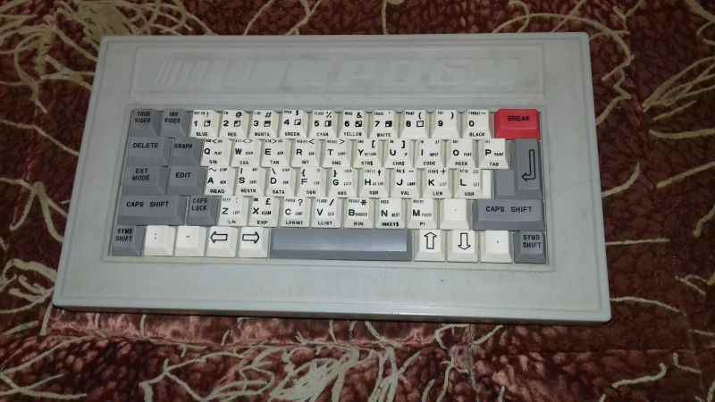

| Годы производства | Предположительно 1994-1996 |
| Производился | Завод "Северный Пресс" г. Санкт-Петербург |
| Процессор | КР1858ВМ1 |
| Частота | 4 МГц |
| Скорость | 105% |
| ОЗУ | 48КБ |
| ПЗУ | 32КБ |
| Преемущества | Качество картинки, качественная клавиатура, два разъема под джойстик, высокая совместимость с оригиналом |
| Недостатки | Комплектный кодер дает только черно-белое изображение, плохо реагирует на даже небольшие перепады напряжения. |
Программируемый Игровой Автомат РОБИ 48к
Программируемый Игровой Автомат РОБИ 48к - отечественный клон ZX Spectrum 48k, производства завода "Северный Пресс" г. Санкт-Петербург. Производился предположительно с 1994 до 1996 года. Тираж неизвестен, предположительно более 1500 экземпляров. Известно о существовании только одной модели компьютера, но скорее всего имел несколько разных вариантов комплектации( информация из мануала ). В нашем музее имеется компьютер с номером 1309 и выпущен не раньше чем 29 сентября 1994 г.(информация из техпаспорта).На "Северном Прессе" также выпускался и другой клон ZX Spectrum - ПИА "Хоббит", который схож с аналогичным и присутствует в нашем музее( нажми на текст чтобы перейти ).
Основная информация:
Клон построен на основе клона Zilog Z80 отечественного производства - КР1858ВМ1. Клон имеет довольно большую совместимость с оригинальными программами для ZX, но работает немного быстрее чем обычный Z80 - на 5% быстрее, вероятно из-за повышенной тактовой частоты процессора - 4 МГц против 3,5 в оригинальном ZX Spectrum. Клон, судя по информации в мануале, имел 7 разных вариантов комплектаций:1 - Компьютер, БП, Руководство по эксплуатации, Кабель для подключения к телевизору, Кассета с программным обеспечением.
2. Компьютер, БП, Руководство по эксплуатации, Кабель для подключения к телевизору, Кассета с программным обеспечением, Телевизионный модулятор.
3. Компьютер, БП, Руководство по эксплуатации, Кабель для подключения к телевизору, Кассета с программным обеспечением, Плата сопряжения с телевизором.
4. Компьютер, БП, Руководство по эксплуатации, Кабель для подключения к телевизору, Кассета с программным обеспечением, Джойстик, Телевизионный модулятор.
5. Компьютер, БП, Руководство по эксплуатации, Кабель для подключения к телевизору, кассета с программным обеспечением, джойстик, плата сопряжения с телевизором.
6. Компьютер, БП, Руководство по эксплуатации, Кабель для подключения к телевизору, Дискета с программным обеспечением, Плата сопряжения с телевизором, Блок накопителя на магнитном диске.
7. Компьютер, Руководство по эксплуатации, Кабель для подключения к телевизору, Дискета с программным обеспечением, Плата сопряжения с телевизором, Блок накопителя на магнитном диске.
Доподлинно известно только об одной из таковых комплектаций - 2, существование остальных допускается, однако не доказано в силу редкости данного клона.
Компьютер имеет пластиковый корпус и имеет 58-клавишную пластиковую клавиатуру. Расположение кнопок аналогично ZX Spectrum+.
Имеет на RGB-выходе PAL-сигнал, при подключении через комплектующий ВЧ-модулятор выдается черно-белое изображение.
ПЗУ модифицировано, при включении выдается графический логотип с надписью ROBI 48k+. Однако других изменений не наблюдалось и в мануале об этом нет упоминаний.
Звук с компьютера выводится на экран телевизора.
Комплектующая кассета содержит следующие программы:
Кассета фирмы Тасма на 60 минут( 30 с каждой ), программное обеспечение однако записано только на одной стороне1.TEST - "Sinclair ZX Spectrum Test Programm" - Sinclair Research.
2.VPOOL - "Video Pool" на русском языке - James Hutchby - имеет нестандартную загрузочную картинку, на которой написано Video pool: ?zagruzka? Cracked by O.Kozloff `91
3.LODERUN - "Lode Runner" 48k - Platinum Productions - имеет нестандартную загрузочную картинку, на которой написано Loading...Please Wait...
4.Fast Food - "Fast Food" 48k - Code Masters - Загрузчик стандартный
5.Battle S. - "Battle Ships" 48k - Encore
6.TETRIS - "Tetris" - Mirrorsoft - имеет нестандартный польский загрузчик
IS-CHESS - "Cyrus IS Chess" игра переведена на русский язык - Sinclair Research.
STAR - Не загрузилась
Zotyocop - Копировщик из Венгрии
Разъемы:
Располагаются на задней панели клона, слева направо:Кнопка сброса, DIN5 - +5В( Разъем блока питания ),
Интерфейс( расширение, вероятно для подключения контроллера дисковода ),
Принтер( разъем для подключения принтера ),
DIN7 - ДЖ2( Sinclair-джойстик ),
DIN7 - ДЖ1( Kempston-джойстик ),
DIN7 - Видео( RGB-выход ),
DIN5 - МАГ ( Чтение/Запись магнитофона).
Ссылки:
https://www.youtube.com/watch?v=Xw9yjXMKgIk - видеообзор от автора данной статьи, который был записан через неделю после покупки.
http://superbrain1997.blogspot.ru/2016/01/superbrain1997-robi-48k.html - ссылка на более подробный разбор клона+видеообзор от автора этой статьи и блога.